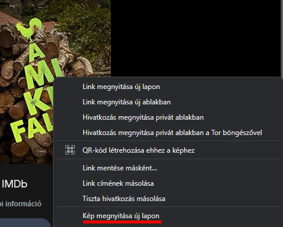
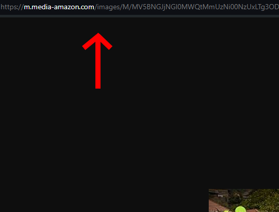
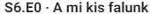

Néhány funkció magyarázata
-
Az információk megszerzése:
Sajnos az információk lekérését nem tudtam még autómatizálni.
De tökéletes forrás az imdb oldala ahonnan meg lehet nézni a szükséges adatokat.
A kép linkeket pedig így lehet megkapni:
- 
- 
- 0.rész:
Ha ilyet látsz, akkor az 0.rész, ahogyan a nevében is benne van.

- Sok várakozási idő:
Sajnos csak így tudtam megoldani, hogy normálisan átfusson az adat a szerveren, és ne legyenek problémák az oldallal.
- Jelszó rendszer:
Ha belépsz egy felhasználónévvel és azt még nem használta senki, akkor amint sorozatot adnál hozzá te adod meg a fióknak a jelszót, amivel az a későbbiekben működni fog. Tehát jegyezd meg ezt a megadott jelszót, mert a későbbiekben ezzel fogsz tudni nagyjából mindent csinálni.